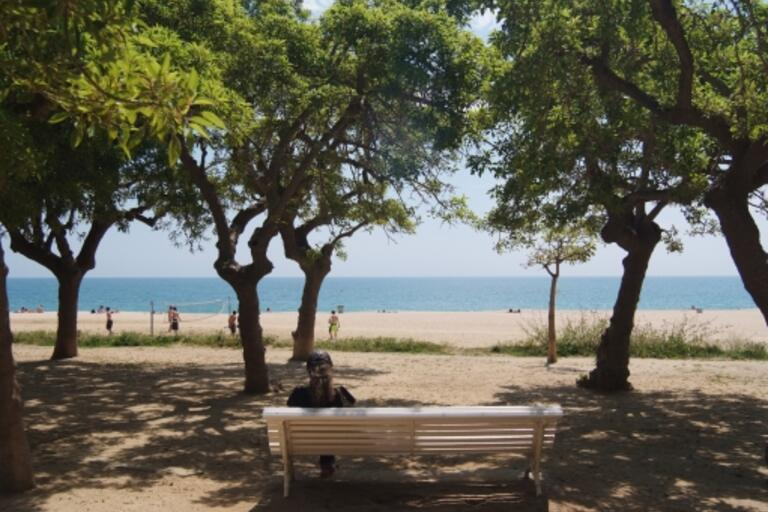

Visita · Mataró
Mataró té més de 2 quilòmetres de platges per prendre el sol i fer tota mena d’activitats nàutiques durant tot l’any. Se'n diferencien quatre platges de dimensions molt variables, totes elles amb…